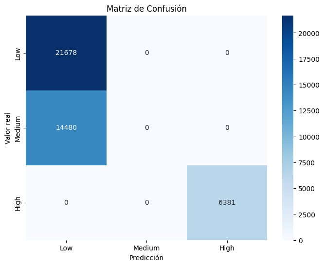
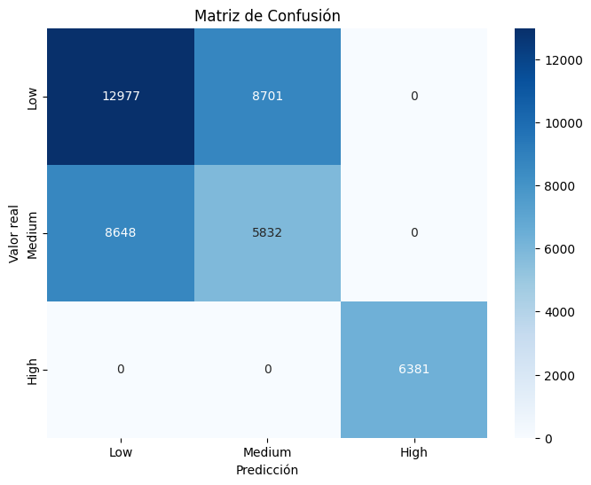
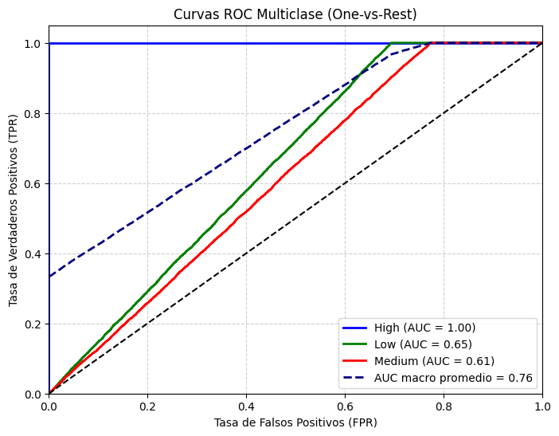
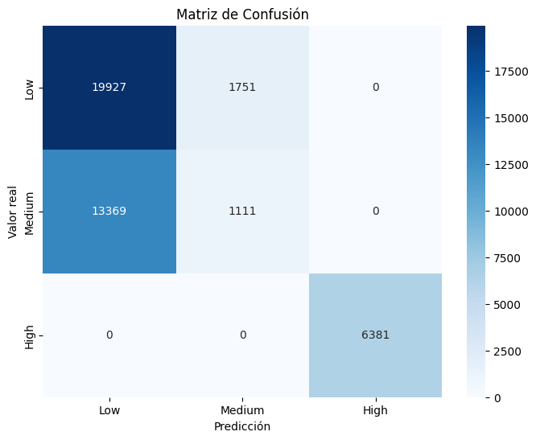
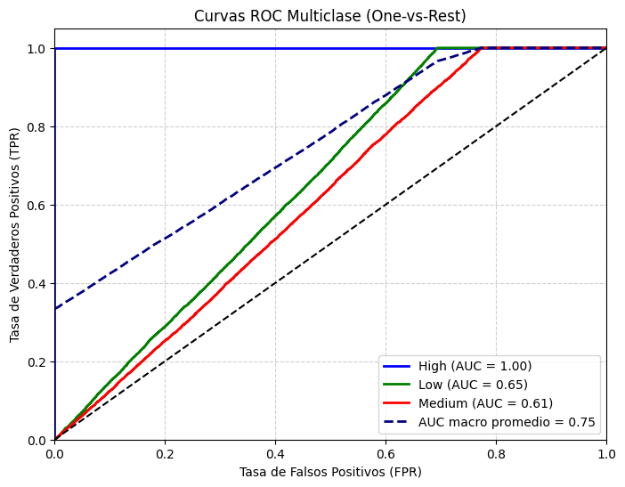
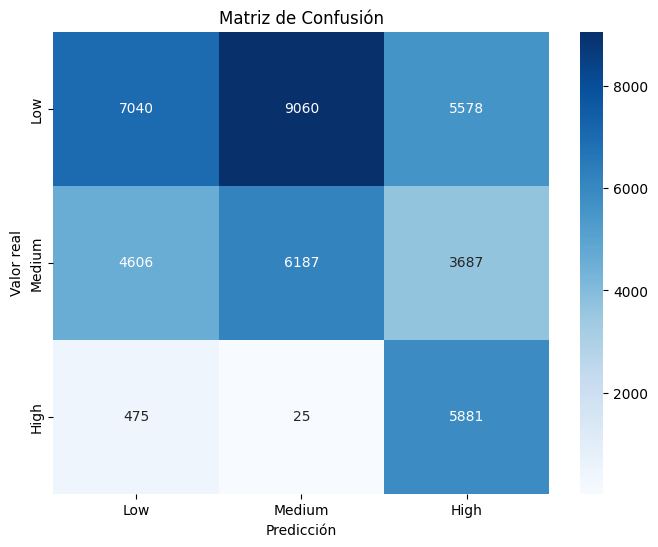
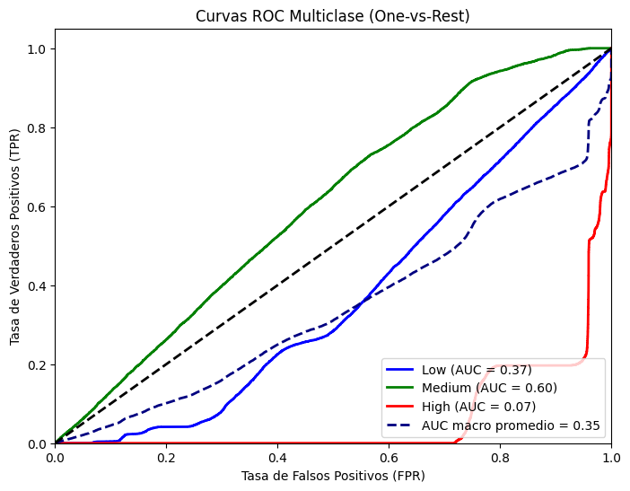

SVM#
Importaciones#
import time
import pandas as pd
import warnings
warnings.filterwarnings('ignore')
from sklearn.svm import SVC
from sklearn.svm import LinearSVC
from sklearn.preprocessing import OneHotEncoder, StandardScaler, label_binarize
from sklearn.compose import ColumnTransformer
from sklearn.pipeline import Pipeline
from sklearn.metrics import (
accuracy_score, precision_score, recall_score, f1_score,
roc_auc_score, confusion_matrix, classification_report,
roc_curve, auc
)
from sklearn.model_selection import train_test_split, GridSearchCV,StratifiedKFold
from imblearn.over_sampling import SMOTE, ADASYN
from imblearn.pipeline import Pipeline as ImbPipeline
importamos las librerias
Cargado de datos#
X_train = pd.read_csv('data/X_train.csv')
y_train = pd.read_csv('data/y_train.csv')
X_test = pd.read_csv('data/X_test.csv')
y_test = pd.read_csv('data/y_test.csv')
X_train.shape, X_test.shape, y_train.shape, y_test.shape
((170152, 14), (42539, 14), (170152, 1), (42539, 1))
y_train = y_train.squeeze()
y_test = y_test.squeeze()
cargamos los datos
Funciones usadas#
from funciones import *
Modelo SVC#
pipe_SVC = crear_pipeline(SVC(kernel='rbf', C=1.0, gamma='scale', probability=True), tipo="normal")
start = time.time()
model_pipe = pipe_SVC.fit(X_train,y_train)
end = time.time()
print(f"Tiempo de ejecución: {(end - start)/60:.2f} minutos")
Tiempo de ejecución: 669.48 minutos
evaluar_modelo(model_pipe, X_test, y_test)

Classification Report:
precision recall f1-score support
Low 0.60 1.00 0.75 21678
Medium 0.00 0.00 0.00 14480
High 1.00 1.00 1.00 6381
accuracy 0.66 42539
macro avg 0.53 0.67 0.58 42539
weighted avg 0.46 0.66 0.53 42539
{'Accuracy': 0.6596064787606667,
'Precision (macro)': 0.5331784575105555,
'Recall (macro)': 0.6666666666666666,
'F1-score (macro)': 0.5832123014500773,
'ROC-AUC': 0.757175018523292}
plot_roc_multiclass(model_pipe, X_test, y_test)
===== AUC por clase =====
High: 1.0000
Low: 0.6553
Medium: 0.6162
AUC macro promedio: 0.7572
({0: 1.0, 1: 0.6552872233501201, 2: 0.6162378322197564}, 0.7571898656674924)
El modelo presenta un excelente desempeño en la clase High con un AUC perfecto de 1.0000, indicando una separación completa entre las observaciones positivas y negativas.
Las clases Low (0.6542) y Medium (0.6152) muestran un rendimiento moderado, lo que sugiere que el modelo aún tiene cierta dificultad para discriminar entre estas categorías.
El AUC macro promedio de 0.7565 refleja un rendimiento general sólido y equilibrado, evidenciando una mejora respecto a versiones anteriores y una mejor capacidad de generalización global.
Balanceo de modelo#
SMOTE#
pipe_SVC_bal = crear_pipeline(SVC(kernel='rbf', C=1.0, gamma='scale', probability=True), tipo="balanceo_smote")
start = time.time()
model_pipe_bal = pipe_SVC_bal.fit(X_train,y_train)
end = time.time()
print(f"Tiempo de ejecución: {(end - start)/60:.2f} minutos")
Tiempo de ejecución: 420.43 minutos
evaluar_modelo(model_pipe_bal, X_test, y_test)

Classification Report:
precision recall f1-score support
Low 0.60 0.60 0.60 21678
Medium 0.40 0.40 0.40 14480
High 1.00 1.00 1.00 6381
accuracy 0.59 42539
macro avg 0.67 0.67 0.67 42539
weighted avg 0.59 0.59 0.59 42539
{'Accuracy': 0.5921624861891441,
'Precision (macro)': 0.6671286977335615,
'Recall (macro)': 0.6671292551265577,
'F1-score (macro)': 0.6671282299477231,
'ROC-AUC': 0.7562668748234692}
plot_roc_multiclass(model_pipe_bal, X_test, y_test)

===== AUC por clase =====
High: 1.0000
Low: 0.6540
Medium: 0.6148
AUC macro promedio: 0.7563
({0: 1.0, 1: 0.6539598656825418, 2: 0.6148407587878659}, 0.7562817610559258)
El modelo Smote actual mantiene el rendimiento perfecto para la clase High y presenta ligeras mejoras en las clases Low y Medium, lo que se refleja en un incremento mínimo del AUC macro promedio (de 0.7565 a 0.7567). Aunque la mejora es marginal, indica una mayor estabilidad y consistencia del modelo al clasificar las tres categorías, especialmente en los casos menos representados.
ADASYN#
pipe_SVC_ads = crear_pipeline(SVC(kernel='rbf', C=1.0, gamma='scale', probability=True), tipo="balanceo_adasyn")
start = time.time()
model_pipe_ads = pipe_SVC_ads.fit(X_train,y_train)
end = time.time()
print(f"Tiempo de ejecución: {(end - start)/60:.2f} minutos")
Tiempo de ejecución: 357.93 minutos
evaluar_modelo(model_pipe_ads, X_test, y_test)

Classification Report:
precision recall f1-score support
Low 0.60 0.92 0.72 21678
Medium 0.39 0.08 0.13 14480
High 1.00 1.00 1.00 6381
accuracy 0.64 42539
macro avg 0.66 0.67 0.62 42539
weighted avg 0.59 0.64 0.56 42539
{'Accuracy': 0.6445614612473259,
'Precision (macro)': 0.6622234582676693,
'Recall (macro)': 0.6653177950946866,
'F1-score (macro)': 0.6176963780577843,
'ROC-AUC': 0.7538951422827758}
plot_roc_multiclass(model_pipe_ads, X_test, y_test)

===== AUC por clase =====
High: 1.0000
Low: 0.6506
Medium: 0.6111
AUC macro promedio: 0.7539
({0: 1.0, 1: 0.6505936965972128, 2: 0.6110917302511145}, 0.7539098514477589)
El nuevo modelo mantiene un rendimiento perfecto en la clase High, pero muestra una ligera disminución en las clases Low y Medium, lo que reduce el AUC macro promedio en 0.0025 puntos. Aunque la caída es leve, sugiere que el modelo anterior ofrecía una mayor capacidad de generalización, especialmente para las clases minoritarias.
Optimizacion computacional#
pipe_SVM_opt = crear_pipeline(
LinearSVC(C=1.0,
penalty='l2',
loss='squared_hinge',
max_iter=5000,
random_state=0),
tipo="balanceo_smote",
)
start = time.time()
model_pipe_opt = pipe_SVM_opt.fit(X_train, y_train)
end = time.time()
print(f"Tiempo de ejecución: {(end - start)/60:.2f} minutos")
Tiempo de ejecución: 0.12 minutos
y_scores = model_pipe_opt.decision_function(X_test)
classes = model_pipe_opt.classes_
roc_aucs = {}
for i, cls in enumerate(classes):
binary_true = (y_test == cls).astype(int)
roc_aucs[cls] = roc_auc_score(binary_true, y_scores[:, i])
roc_aucs
{'High': 0.9321384010185183,
'Low': 0.6293727509717635,
'Medium': 0.6030654895692364}
roc_auc_macro = np.mean(list(roc_aucs.values()))
print("ROC-AUC macro:", roc_auc_macro)
ROC-AUC macro: 0.7215255471865061
Calculamos roc manualmente dado que nuestra funcion no es compatible con el modelo LinearSVC
evaluar_modelo(model_pipe_opt, X_test, y_test)
[Aviso] No se pudo calcular AUC: This 'Pipeline' has no attribute 'predict_proba'

Classification Report:
precision recall f1-score support
Low 0.58 0.32 0.42 21678
Medium 0.41 0.43 0.42 14480
High 0.39 0.92 0.55 6381
accuracy 0.45 42539
macro avg 0.46 0.56 0.46 42539
weighted avg 0.49 0.45 0.44 42539
{'Accuracy': 0.4491878041326782,
'Precision (macro)': 0.45807266089870097,
'Recall (macro)': 0.5578915291144475,
'F1-score (macro)': 0.4596229322003424,
'ROC-AUC': None}
plot_roc_multiclass2(model_pipe_opt, X_test, y_test)

Los resultados muestran un AUC macro promedio de 0.34, indicando un bajo desempeño general.
La clase High (0.04) presenta una capacidad casi nula para discriminar correctamente.
La clase Low (0.36) mejora ligeramente, pero sigue siendo débil.
La clase Medium (0.61) es la única con un rendimiento moderado.
En conjunto, el modelo no logra diferenciar bien entre las clases, lo que sugiere la necesidad de ajustar el preprocesamiento, el balance de clases o los hiperparámetros para mejorar la capacidad predictiva.
Tabla Comparativa#
SVM |
Accuracy |
Precision_macro |
Recall_macro |
F1-macro |
AUC |
Tiempo en minutos |
|---|---|---|---|---|---|---|
SVC |
0.66 |
0.53 |
0.67 |
0.58 |
0.76 |
461.75 |
SMOTE |
0.60 |
0.68 |
0.68 |
0.68 |
0.76 |
485.55 |
ADASYN |
0.65 |
0.66 |
0.66 |
0.61 |
0.75 |
344.86 |
Optimizado |
0.52 |
0.54 |
0.61 |
0.56 |
0.73 |
0.16 |